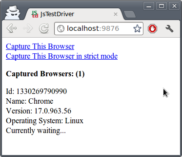
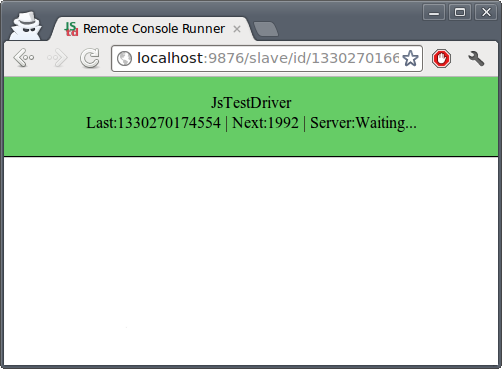

There must be some way to
automate it!*
* on change, before commit, Continuous integration
myapp = {};
myapp.Greeter = function() { };
myapp.Greeter.prototype.greet = function(name) {
return "Hello " + name + "!";
};
GreeterTest = TestCase("GreeterTest");
GreeterTest.prototype.testGreet = function() {
var greeter = new myapp.Greeter();
assertEquals("Hello World!", greeter.greet("World"));
};
Time to tell JsTestDriver where code and tests are.
project structure
./
src
greeter.js
src-test
greeter-test.js
jsTestDriver.conf
JsTestDriver.jar
jsTestDriver.conf
server: http://localhost:9876 load: - src/*.js - src-test/*.js
java -jar JsTestDriver.jar --port 9876

java -jar JsTestDriver.jar --tests "all"
Running all tests
..
Total 2 tests (Passed: 2; Fails: 0; Errors: 0) (7,00 ms)
Chrome 17.0.963.56 Linux: Run 2 tests (Passed: 2; Fails: 0; Errors 0) (7,00 ms)
runs.should execute a runs block passed (4,00 ms)
[LOG] JsTestDriver Hello World!
runs.should execute a runs block passed (3,00 ms)
[LOG] JsTestDriver Hello World!
Total 2 tests (Passed: 2; Fails: 0; Errors: 0) (7,00 ms)
Capturing every browser for testing is cumbersome
Fortunately server can autocapture browsers! *
java ... --browser firefoxpath,chromepath
BDD for JavaScript
describe("Jasmine", function() {
it("makes testing awesome!", function() {
expect(yourCode).toBeLotsBetter();
});
});
BDD - besides funky syntax :)
- Unites acceptance testing and unit testing
- Outside–in - starts from GUI
- Test are written with client (unites QA, clients, developers)
- Agile, YAGNI
- More, but I just like this syntax ;)
What tigers like the most
describe('How about async?', function() {
it('should calc asynchronously', function () {
var spreadsheet = new Spreadsheet();
spreadsheet.asynchronouslyCalculate();
waitsFor(function() {
return spreadsheet.calculationIsComplete();
}, "Spreadsheet calculation never completed", 10000);
runs(function () {
expect(spreadsheet.total).toEqual(123456);
});
});});
Can be used in:
- Browser (like qUnit)
- Node.js
- JsTestDriver
- Rhino
- many others

- Headless WebKi
- DOM handling, CSS selector, JSON, Canvas, and SVG.
- Think of it like command line browser :)
- I want't able to install it :(